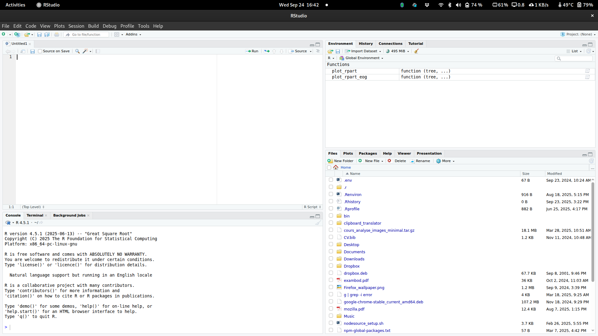
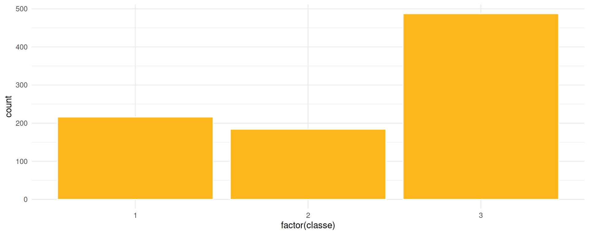
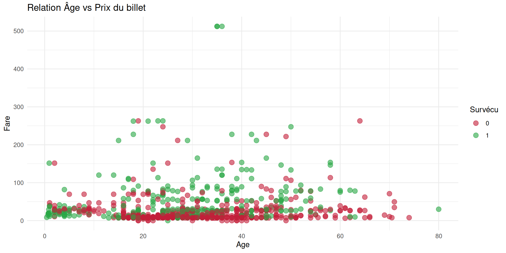
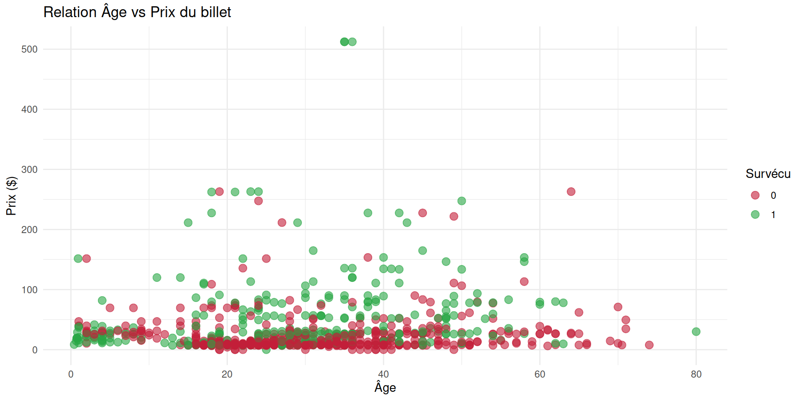
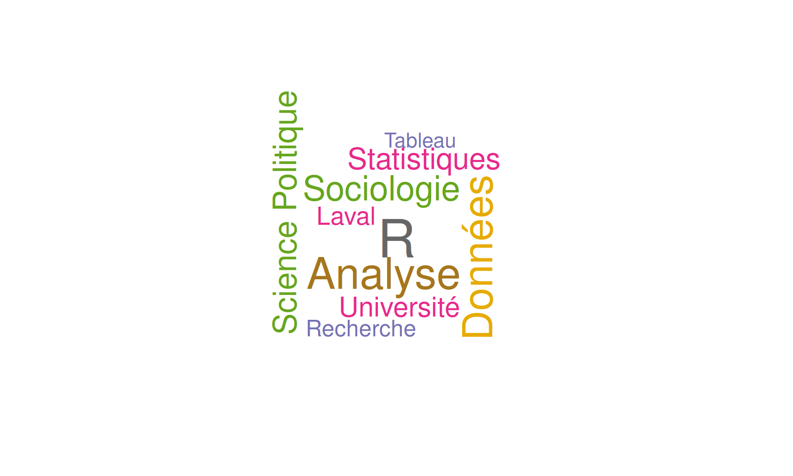

[1] 30[1] 4[1] 8Formation théorique | 9h à 12h
2026-03-11
Au programme aujourd’hui :
Logistique : - 9h - 12h : Formation théorique (Hybride) - 12h - 13h : Pause dîner - 13h - 15h : Atelier pratique (Présentiel BNF-4285)
Site de la formation
Matériel requis
Aide & Mentorat
N’hésitez pas à poser vos questions sur Zoom ou en classe ! Nos mentors sont là pour vous aider.

1. Script
C’est votre recette. On écrit ici pour pouvoir tout relancer plus tard.
2. Environnement
C’est votre garde-manger. Vos données et objets y sont stockés.
3. Console
C’est le four. Le code s’y exécute réellement.
4. Fichiers/Graphiques
C’est votre fenêtre sur le monde. On y voit nos dossiers et nos résultats.
À tester dans la console
Essayez ces commandes pour vous dégourdir les doigts.
En R, on sauvegarde tout dans des objets avec <-
Note
Important : Les objets apparaissent dans le panneau Environment de RStudio !
[1] "numeric"[1] "character"[1] "logical"Problème fréquent en analyse de données
Parfois, des nombres sont stockés comme du texte dans vos données. R ne peut pas calculer avec du texte !
[1] 8.0 7.5 6.8[1] "numeric"[1] 7.433333Bonne pratique
Toujours vérifier le type de vos variables avec class() avant de faire des calculs !
Un data frame = tableau avec lignes et colonnes
$ (recommandé)Une fonction fait une tâche : fonction(argument1, argument2)
Analogie
R de base = téléphone vide. Packages = applications qu’on télécharge.
Votre ordinateur = une grande bibliothèque
Chaque fichier a une adresse précise (chemin) pour le retrouver !
[1] "/home/etienne_prx/Dropbox/travail/enseignements/R_intro_fss" [1] "_freeze" "_quarto.yml" "ancien.qmd" "custom.scss"
[5] "data" "docs" "exercices.qmd" "images"
[9] "index.qmd" "README.md" "script" "slides_files"
[13] "slides.qmd" "slides.rmarkdown"# Charger les données Titanic depuis un dossier 'data'
titanic <- read.csv("data/titanic.csv")
# Premier coup d'œil (3 premières lignes)
head(titanic, 3) Survived Pclass Name Sex Age
1 0 3 Mr. Owen Harris Braund male 22
2 1 1 Mrs. John Bradley (Florence Briggs Thayer) Cumings female 38
3 1 3 Miss. Laina Heikkinen female 26
Siblings.Spouses.Aboard Parents.Children.Aboard Fare
1 1 0 7.2500
2 1 0 71.2833
3 0 0 7.9250dplyr est construit sur une idée simple : chaque action est un verbe.
select() : Choisir des colonnesfilter() : Choisir des lignesmutate() : Créer/modifier des colonnesarrange() : Trier les lignessummarise() : Résumer les donnéesgroup_by() : Créer des groupes%>% (Ctrl+Maj+M)C’est le connecteur universel. Il signifie : “Prend ce qui est à gauche et passe-le comme premier argument à la fonction à droite.”
Analogie : Pâte %>% Étaler() %>% Garnir() %>% Cuire()
On l’utilise pour ne garder que les variables qui nous intéressent.
Astuce
select() permet aussi de réordonner vos colonnes ! Les colonnes citées en premier apparaîtront à gauche.
On l’utilise pour extraire des sous-ensembles de lignes selon des critères.
# Un seul critère : les femmes
femmes <- titanic %>%
filter(Sex == "female")
# Critères multiples (ET) : les femmes de 1ère classe
femmes_1ere <- titanic %>%
filter(Sex == "female", Pclass == 1)
# Critères multiples (OU) : 1ère classe OU 2e classe
classes_sup <- titanic %>%
filter(Pclass == 1 | Pclass == 2)Attention
Utilisez toujours le double égal == pour comparer (tester l’égalité) et non un seul = !
Permet de trier votre tableau selon une ou plusieurs variables.
Sert à créer de nouvelles colonnes basées sur les existantes ou à modifier des colonnes.
titanic <- titanic %>%
mutate(
# 1. Créer une variable binaire enfant/adulte
est_enfant = ifelse(Age < 18, "Enfant", "Adulte"),
# 2. Calculer la taille de la famille (soi-même + frères/sœurs + parents/enfants)
taille_famille = Siblings.Spouses.Aboard + Parents.Children.Aboard + 1,
# 3. Convertir le prix en Dollars constants (exemple fictif)
fare_ajuste = Fare * 1.2
)Parce que les noms de colonnes originaux sont parfois cryptiques ou mal formatés.
# rename(NOUVEAU_NOM = ANCIEN_NOM)
titanic <- titanic %>%
rename(
survie = Survived,
classe = Pclass,
sexe = Sex,
age = Age,
prix = Fare
)
names(titanic) [1] "survie" "classe"
[3] "Name" "sexe"
[5] "age" "Siblings.Spouses.Aboard"
[7] "Parents.Children.Aboard" "prix"
[9] "est_enfant" "taille_famille"
[11] "fare_ajuste" C’est la puissance ultime de dplyr. On découpe, on calcule, on recolle.
# Quelle est la survie moyenne par sexe et par classe ?
statistiques_titanic <- titanic %>%
group_by(sexe, classe) %>%
summarise(
nb_passagers = n(),
age_moyen = mean(age, na.rm = TRUE),
taux_survie = mean(survie) * 100
)
statistiques_titanic# A tibble: 6 × 5
# Groups: sexe [2]
sexe classe nb_passagers age_moyen taux_survie
<chr> <int> <int> <dbl> <dbl>
1 female 1 94 35.3 96.8
2 female 2 76 29.0 92.1
3 female 3 144 22.1 50
4 male 1 122 41.5 36.9
5 male 2 108 30.5 15.7
6 male 3 343 26.5 13.7Logique Split-Apply-Combine

Pourquoi transformer en catégories ?
factor() : R croit que c’est un nombre continu (axe 1.0, 1.5, 2.0).factor() : R crée des catégories distinctes (1, 2, 3).Conseil
Utilisez toujours factor() pour vos variables catégorielles avant de les mettre dans un graphique.

Anatomie du code :
geom_histogram() : l’outil de distribution.bins = 20 : ajuste la précision.fill & color : l’esthétique.# RELATION ENTRE DEUX VARIABLES
ggplot(titanic, aes(x = age, y = prix, color = factor(survie))) +
geom_point(alpha = 0.6, size = 3) + # points (alpha = transparence)
scale_color_manual(values = c("#C31E39", "#28a745")) + # couleurs manuelles
labs(title = "Relation Âge vs Prix du billet", color = "Survécu", x = "Âge", y = "Prix ($)") +
theme_minimal()
Ce que nous avons vu est la base. Voici ce que R permet de faire ensuite :
Les étapes clés :
Exemple de code fonctionnel :
library(wordcloud)
mots <- c("R", "Analyse", "Données", "Sociologie", "Science Politique",
"Statistiques", "Université", "Laval", "Recherche", "Tableau")
freq <- c(100, 80, 75, 60, 55, 50, 45, 40, 35, 30)
wordcloud(words = mots, freq = freq, min.freq = 1,
max.words = 50, random.order = FALSE,
colors = brewer.pal(8, "Dark2"))
Paramètres clés
À quoi ça sert ?
C’est un outil d’exploration rapide pour identifier les thèmes dominants d’un corpus avant de coder vos entretiens.
L’analyse textuelle avec R est un domaine en pleine explosion :
Erreurs courantes :
Réflexes : lire le message, tester ligne par ligne, utiliser l’aide (?).
Ce que vous maîtrisez maintenant
✅ L’interface RStudio
✅ La création d’objets et de vecteurs
✅ L’importation de données CSV
✅ La manipulation avec dplyr
✅ La visualisation avec ggplot2
✅ Les bases de l’analyse textuelle
Merci pour votre attention !
Contact : etienne.proulx.2@ulaval.ca
Pratiquez, expérimentez, et n’ayez pas peur des erreurs !

Faculté des sciences sociales | Université Laval